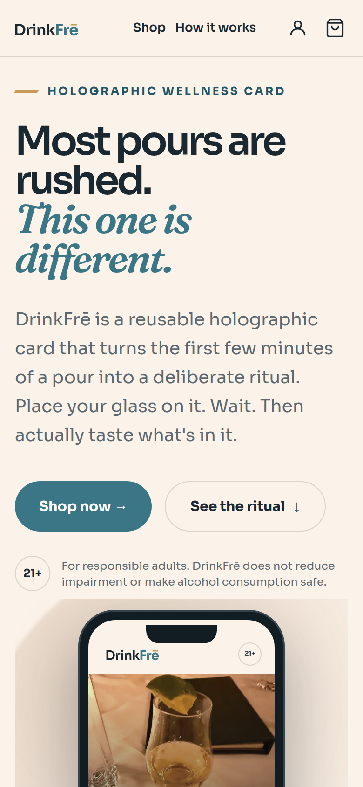
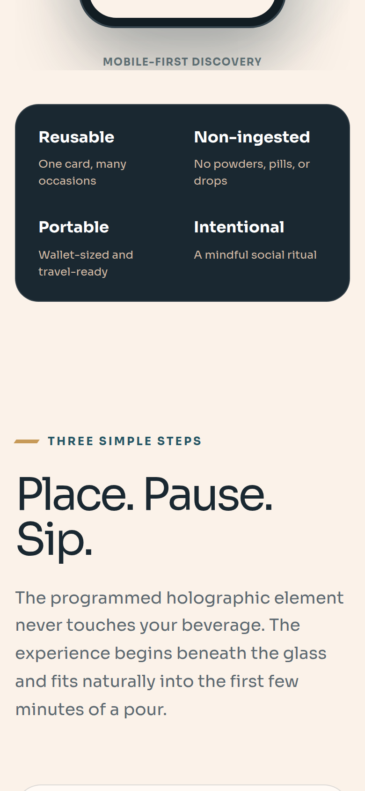
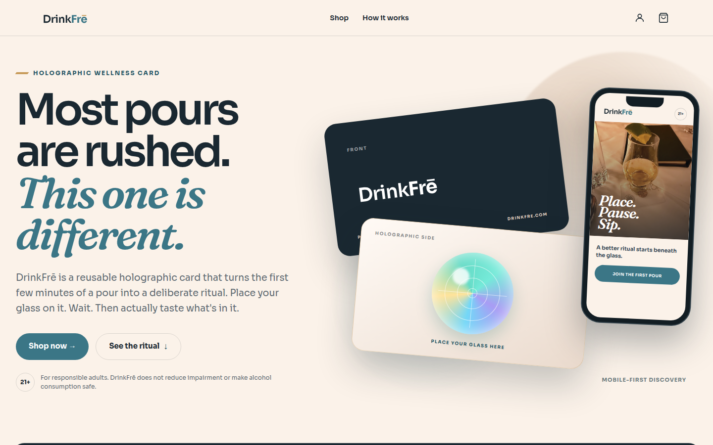
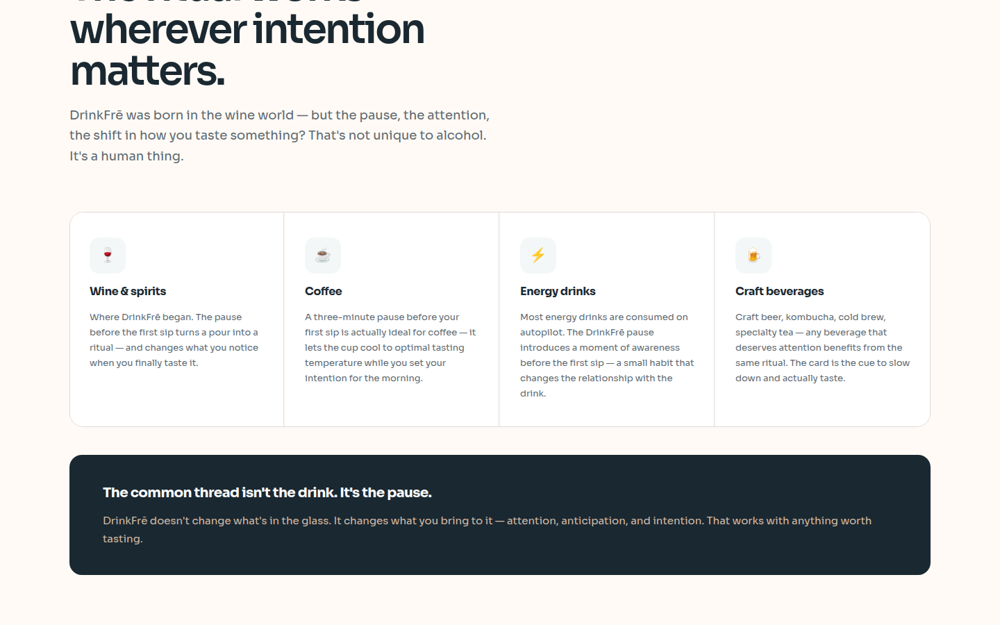
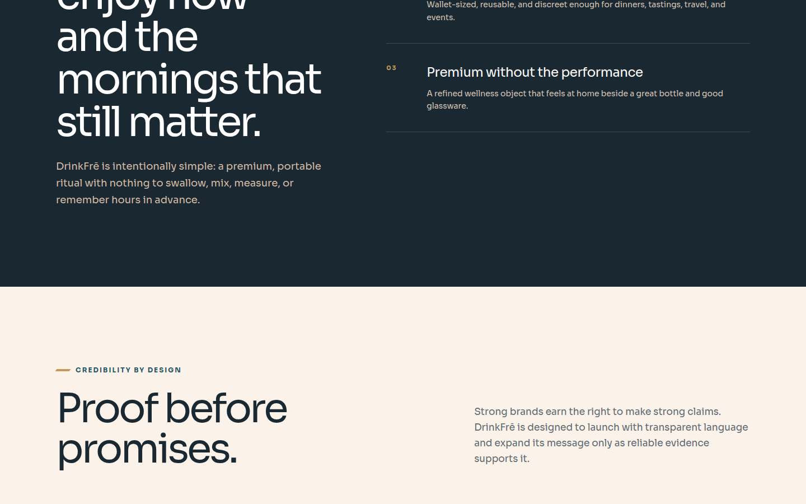

Most pours
are rushed.
A product site for a reusable holographic card. Place the glass, pause three to five minutes, then sip. The page says it does not reduce impairment.
Place. Pause. Sip.
The card stays beneath the glass. Nothing is added to the drink. The page is explicit: for responsible adults, and it does not make alcohol consumption safe.
Sora, set calm. Teal for the action.
The live site sets headlines in Sora. Cream is the paper. Teal is the button. A warm gold shows up on the second action. The specimen uses that same Sora.


The card, then the ritual.
The phone opens on the holographic card and the line about a rushed pour. The next screen continues the same product story.
The card. The steps. The page.
Hero, then the sections further down drinkfre.com. The product never claims to change what is in the glass.



Most pours are rushed. This one is different.
The whole ritual, on one page.
Card, steps, and the responsibility line. drinkfre.com, from the first line to the last. No prices on this study.
drinkfre.com — a reusable holographic card. Place, pause, sip. It does not reduce impairment.
- Design DirectionStudio
- Product DesignStudio
- InterfaceStudio
- PhotographyLive site